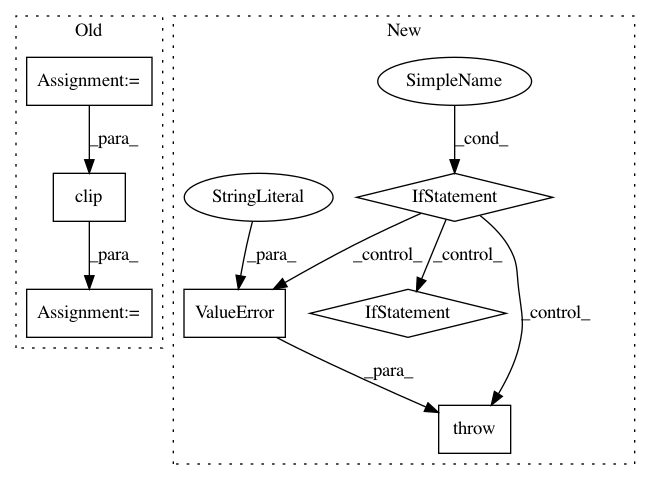

fa961f2290c3144f1c5a5c9b8a484610ab835032,art/defences/spatial_smoothing.py,SpatialSmoothing,__call__,#SpatialSmoothing#Any#Any#,58
Before Change
:return: Smoothed sample
:rtype: `np.ndarray`
clip_values = (0, 1)
assert self.channel_index < len(x.shape)
size = [1] + [self.window_size] * (len(x.shape) - 1)
size[self.channel_index] = 1
size = tuple(size)
result = ndimage.filters.median_filter(x, size=size, mode="reflect")
result = np.clip(result, clip_values[0], clip_values[1])
return result.astype(NUMPY_DTYPE), y
def estimate_gradient(self, x, grad):
After Change
:return: Smoothed sample
:rtype: `np.ndarray`
if len(x.shape) == 2:
raise ValueError("Feature vectors detected. Smoothing can only be applied to data with spatial "
"dimensions.")
if self.channel_index >= len(x.shape):
raise ValueError("Channel index does not match input shape.")
size = [1] + [self.window_size] * (len(x.shape) - 1)
size[self.channel_index] = 1
size = tuple(size)
result = ndimage.filters.median_filter(x, size=size, mode="reflect")
if hasattr(self, "clip_values") and self.clip_values is not None:
np.clip(result, self.clip_values[0], self.clip_values[1], out=result)
return result.astype(NUMPY_DTYPE), y
def estimate_gradient(self, x, grad):
return grad
In pattern: SUPERPATTERN
Frequency: 3
Non-data size: 7
Instances
Project Name: IBM/adversarial-robustness-toolbox
Commit Name: fa961f2290c3144f1c5a5c9b8a484610ab835032
Time: 2019-05-14
Author: Maria-Irina.Nicolae@ibm.com
File Name: art/defences/spatial_smoothing.py
Class Name: SpatialSmoothing
Method Name: __call__
Project Name: IBM/adversarial-robustness-toolbox
Commit Name: 369e143626d379e6ce61f24eef5626345c673fdc
Time: 2019-06-15
Author: beat.buesser@ie.ibm.com
File Name: art/defences/jpeg_compression.py
Class Name: JpegCompression
Method Name: __call__
Project Name: senarvi/theanolm
Commit Name: 16d2eb3061f1bed8ade390c5e2a2c1de9daa3509
Time: 2015-12-04
Author: seppo.git@marjaniemi.com
File Name: theanolm/optimizers/basicoptimizer.py
Class Name: BasicOptimizer
Method Name: __init__